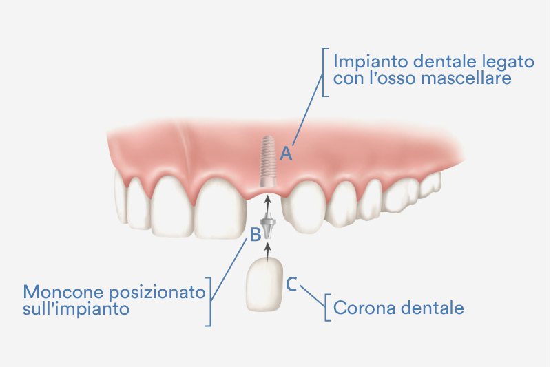
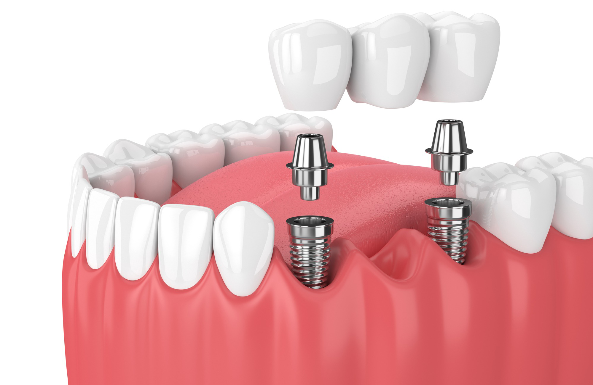

Per implantologia dentale si intende quella branca dell’odontoiatria che mira ad inserire degli impianti dentali, i quali non fanno altro che sostituire la radice del dente e la sua struttura, una volta che esso è caduto oppure è stato estratto.
Il ricorso all’implantologia dentale costituisce il metodo più tecnologico e moderno per correggere l’assenza di denti.
Questo tipo di intervento è indicato per tutte quelle persone che voglino ripristinare l’aspetto estetico del proprio sorriso.
Il costo di un impianto dentale in Albania è di circa 300 euro. Ciò è dovuto a aliquote fiscali molto più basse rispetto all'Italia o all'Europa, e anche perché qui i salari sono più bassi. Questo però non significa che la qualità sia peggiore che in Italia, la nostra clinica utilizza solo impianti dentali fabbricati in Svizzera che hanno una garanzia a vita.
Un impianto dentale è una tecnica di chirurgia odontoiatrica, volta a ricreare un dente mancante, al pari di un vero dente naturale. L’impianto è composto da una vite in titanio che viene posizionata a sull’osso per sostituire la radice naturale di un dente mancante.
Gli impianti, costituiti solitamente da materiale di tipo metallico (titanio), sono composti sostanzialmente da tre elementi:
Come detto, la vite viene inserita all’interno dell’osso mentre il moncone funge da aggancio per la protesi dentaria vera e propria, che non fa parte dell’impianto dentale vero e proprio, ma assieme agli elementi dell’impianto fornisce il dente.
Ci sono tre modalità di trattamento per sostituire un dente singolo: protesi, ponte e impianto. Vediamoli uno per uno:
Una volta le prime due soluzioni erano quelle più utilizzate, invece ora sono state sostituite nella maggior parte dei casi dall’implantologia.
La mancanza di diversi denti può essere invece risolta posizionando alcuni impianti dentali in punti strategici in maniera tale che si trasformino in pilastri necessari alla realizzazione di un ponte dentale fisso. Tale metodica permette di ridurre i costi del trattamento in quanto limita il numero degli impianti dentali da inserire.
L’immagine ne mostra un esempio:
Non è un trattamento doloroso in quanto, al momento dell’inserimento dell’impianto dentale, al paziente viene fatta l’anestesia locale per ridurre ogni possibilità di disagio.
Vengono utilizzati anestetici appositamente sviluppati per la chirurgia orale, questi sono molto efficaci e il paziente non avverte alcun dolore.
Nel caso in cui il paziente fosse particolarmente ansioso possono essere somministrati degli ansiolitici.
In seguito al trattamento chirurgico verranno prescritti tutti i farmaci necessari al fine di controllare efficacemente l’insorgenza del dolore post- operatorio.
Analisi Preliminare
È necessario effettuare una visita che consentirà, in seguito a radiografie, calchi in gesso e fotografie, di effettuare un’analisi preliminare accurata.
In seguito a questa prima analisi si valuterà se è possibile effettuare un trattamento di implantologia dentale.
Preparazione all’intervento di implantologia
Nella fase di preparazione, il dentista vi farà accomodare in un ambiente sterile, dove sarete preparati all’intervento. Vi sarà somministrato un anestetico locale e in seguito si procederà all’inserimento dell’impianto dentale.
Vi saranno poi fornite la terapia e le raccomandazioni per i sette giorni successivi all’intervento.
L’inserimento della protesi dentaria provvisoria può avvenire dopo qualche mese, se è a carico ritardato, o subito se a carico immediato. Quali sono le differenze?
IMPIANTI A CARICO DIFFERITO
La terapia si svolge in due fasi. Si ha innanzitutto l’inserimento nell’osso degli impianti dentali in titanio. All’estremità dell’impianto dentale viene posizionata una vite di guarigione che affiora alla superficie della gengiva e chiude la parte cava dell’impianto.
La seconda fase prevede un tempo di attesa variabile, che può andare dai tre ai quattro mesi: questo lasso di tempo è necessario per permettere all’impianto dentale di osteointegrarsi e quindi di stabilizzarsi all’interno dell’osso.
Alla fine del periodo di osteointegrazione si rimuove la vite di guarigione e si avvita quella che sarà la protesi definitiva.
IMPIANTI A CARICO IMMEDIATO
L’ implantologia a “carico immediato” consiste nell’ inserimento contemporaneo degli impianti dentali e della corona protesica provvisoria. Per essere definito “immediato” il posizionamento della protesi provvisoria dovrà avvenire entro 36 ore dall’inserimento dell’impianto.
La protesi provvisoria verrà mantenuta in sede per circa 3-4 mesi. Trascorso questo tempo, necessario per la guarigione di tutti i tessuti che sono stati oggetto di intervento, verrà posizionata la protesi definitiva.
Il carico immediato è frequentemente utilizzato nella tecnica “All on Four”. Questa metodica, di recente introduzione, consiste nell’inserimento di quattro impianti che, posizionati in siti strategici e accuratamente studiati, permettono la riabilitazione di pazienti edentuli – ossia senza denti – in una o entrambe le arcate.
L’impianto dentale deve essere curato e controllato regolarmente, proprio come i denti naturali. Utilizzate spazzolino e filo interdentale raccomandato dall’odontoiatra e andate spesso a controlli presso il vostro studio dentistico.
Nei giorni immediatamente successivi all’intervento sarebbe bene che avessi un occhio di riguardo per l’alimentazione. Evita i cibi molto caldi, perché questi potrebbero irritare i tessuti gengivali e magari provocare l’apertura dei punti di sutura.
Cerca anche di non mangiare cibi molto piccoli (come riso o cous cous) o che si sbriciolano facilmente: questi infatti potrebbero andare ad incastrarsi nella ferita e causare infiammazione.
Hai bisogno di una procedura di impianto dentale?